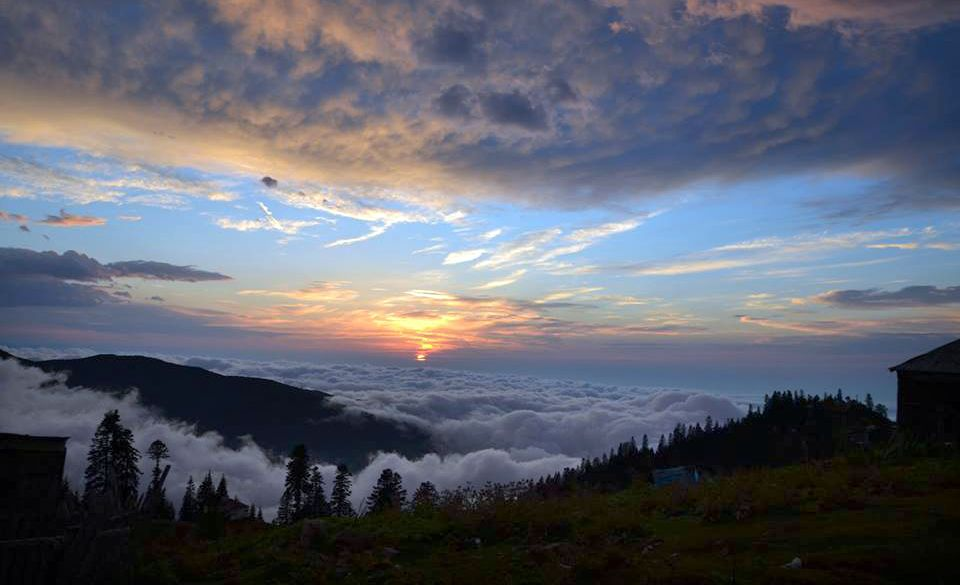

გურია დასავლეთ საქართველოში, კოლხეთის დაბლობსა და მიმდებარე მთიან ზონაში მდებარეობს; დასავლეთიდან მას შავი ზღვის 22-კილომეტრიანი სანაპირო აკრავს. მთისა და ზღვის სიახლოვე კი გურიაში საინტერესო მოგზაურობას გპირდება.
გურიის სიმდიდრე მისი კურორტებია. მთაში ბახმარო და გომისმთაა პოპულარული. ბახმაროში განვითარებული ტურისტული ინფრასტრუქტურა დაგხვდება, გომისმთაზე კი - უფრო ველური ბუნება. ორივე კურორტი ზამთარ-ზაფხულ აქტუალურია - მთის ჰაერით, წყაროებით, სალაშქრო ადგილებით, ზამთარში კი გაუკვალავი ფაფუკი თოვლით. გურიის ზღვის კურორტები - ურეკი, შეკვეთილი და გრიგოლეთი, მაგნიტური ქვიშის გამო, ძალიან პოპულარულია. ეს ვულკანური წარმოშობის ნაშალი ქანია, რომელიც მდინარე სუფსას ბახმაროს მთებიდან შავი ზღვის ნაპირებთან ჩამოაქვს. აქ, სანაპიროზე, ბავშვებისა და უფროსებისთვის ბევრ გასართობს ნახავ. გურიას თავისი პატარა ამაზონი აქვს - მდინარე ფიჩორი, რომელიც კოლხეთის დაბლობზე, ხელშეუხებელ ბუნებაში მოედინება და პალიასტომის ტბას უერთდება. ამასთანავე, გურია მდიდარია მინერალური წყლებითაც, მათ შორის ყველაზე ცნობილია ნაბეღლავი. ეს მინერალური წყალი მსოფლიოს ბევრ ქვეყანაში იყიდება, კურორტ ნაბეღლავში კი შეგიძლია, წყაროდანვე დალიო - რამდენიც გსურს.
გურიაში, ისევე როგორც მთელ დასავლეთ საქართველოში, უმეტესად ოდასახლებია - ფანჯრებიანი ფიცრული საცხოვრებელი, ხის გრძელი აივნით. ნესტიანი ჰავის გამო, სახლის საძირკველი მიწიდან დაშორებულია - ქვისგან გათლილ ბოძებზეა შემდგარი. ეს სახლის ქვედა ნაწილის განიავების საშუალებას იძლევა. აქაურები გეტყვიან, რომ ოდაში ცხოვრება ჯანმრთელობისთვის სასარგებლოა. ამას შენც იგრძნობ, თუ გურიაში ჩახვალ და ერთ-ორ ღამეს მაინც გაატარებ ოდასახლში მოწყობილ საოჯახო სასტუმროში. ძველი გურული ოდები დიდ ისტორიასაც ინახავს. საღამოობით არაფერი სჯობს ოდასახლის ხის აივანზე მირთმეულ არომატულ გურულ „ჩას“, რომელსაც საოცრად უხდება გურულების იუმორით მოყოლილი ისტორიები.
კალანდა გურულების ყველაზე საყვარელი დღესასწაულია - ეს აქაური ახალი წელია და 14 იანვარს დგება. კალანდის მთავარი ატრიბუტია თხილის ტოტებისგან გამოთლილი ჩიჩილაკი. დღესასწაულისთვის მზადება დილიდან იწყება, საგანგებოდ აცხობენ გურულ ღვეზელს - მთვარის ფორმის ღვეზელს ყველითა და კვერცხით; 15 იანვარს კი ოჯახში მეკვლე მოდის - ადამიანი, ვინც სახლში ბედნიერება უნდა შეიტანოს. საინტერესოა, რომ კალანდობას ფესვები წინაქრისტიანულ ეპოქაში აქვს.
გურული სამზარეულო გამორჩეულია მცენარეული კერძების მრავალფეროვნებით. აქ ძალიან პოპულარულია მხალი - მოხარშული და სპეციალური სანელებლებით შეზავებული ბოსტნეული ან მინდვრის მცენარეები, აგრეთვე, ნიგვზიანი კერძები. უგემრიელესია გურული ლობიო, კეცზე გამომცხვარ მჭადთან ერთად. სუფრაზე აუცილებლად მოგართმევენ სანთლის არაყს თაფლისა და ფიჭის საოცარი არომატით და რა თქმა უნდა გურულ ღვინოს. ჩხავერი, ჯანი, სხილათუბანი, ცოლიკაური - გურულები ამ ყურძნის ჯიშებისგან არაჩვეულებრივ ღვინოს აყენებენ.
გურული ხალხური სიმღერა ამ კუთხის ერთ-ერთი სავიზიტო ბარათია. გურულები მღერიან ყველგან და ყოველთვის, დიდი თუ პატარა, ლხინსა თუ გასაჭირში. გურული პოლიფონიის ერთ-ერთი წამყვანი ხმაა „კრიმანჭული“, რომელსაც ხშირად იმპროვიზებულ ჯაზს ადარებენ. გურულებისთვის პოლიფონია გაცილებით მეტია, ვიდრე მხოლოდ სიმღერა. ეს მათ ხასიათს გამოხატავს - როცა ყველა ხმას თავისი სათქმელი აქვს, მაგრამ ერთმანეთს საოცარი ჰარმონიით ერწყმის.